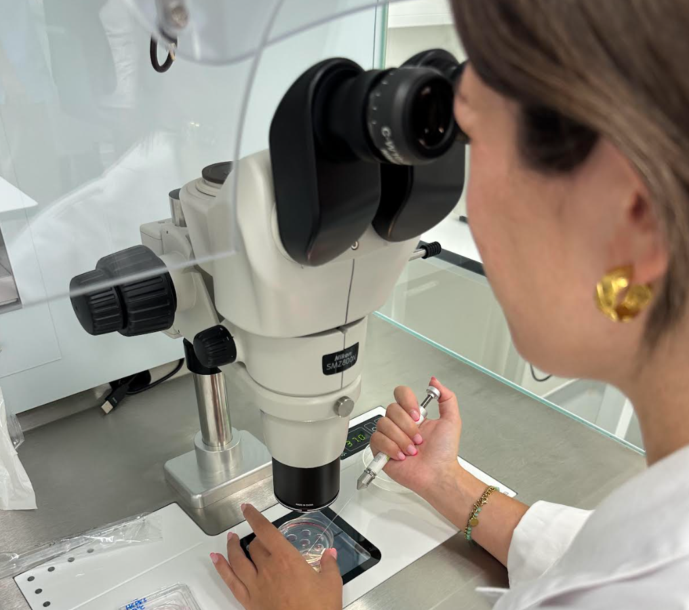

2021-2022
Prossegui os meus estudos com uma Pós-graduação em Bioquímica pela Faculdade de Ciências da Universidade de Lisboa.
Iniciei a minha jornada académica com uma licenciatura em Biologia pela Universidade de Évora, onde descobri a minha paixão pela ciência reprodutiva.
Prossegui os meus estudos com uma Pós-graduação em Bioquímica pela Faculdade de Ciências da Universidade de Lisboa.
Estágio curricular na Cemeare - Centro Médico de Assistência à Reprodução, onde preparei amostras de esperma, identifiquei COCs, procedimentos de transferência de embriões (TDT, COOK, Frydman), avaliei e monitorizei embriões, e executei a vitrificação e aquecimento de embriões.
Concluí um Mestrado em Embriologia e Reprodução Humana na Universidade Lusófona - Centro Universitário Lisboa, com uma tese sobre a Vitrificação de Embriões: Sistema Fechado vs Sistema Aberto."